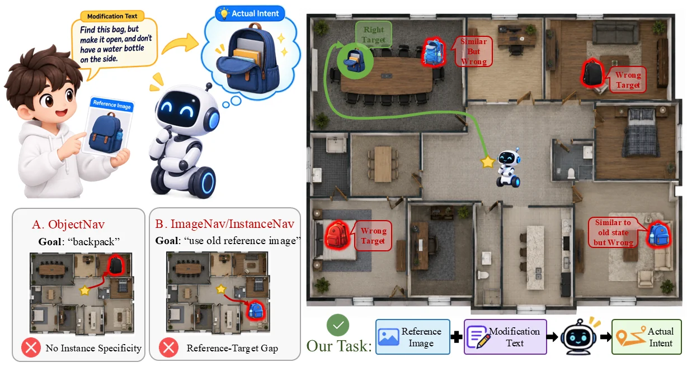
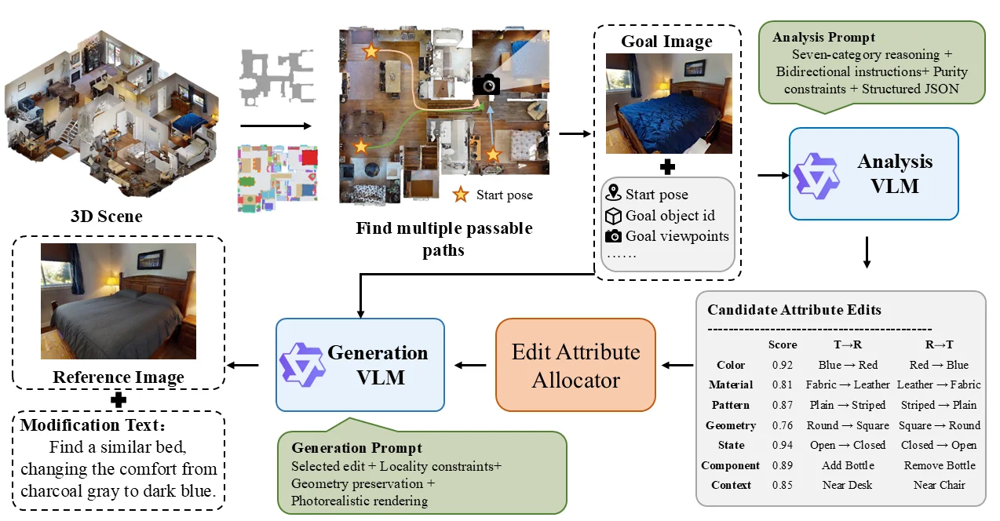
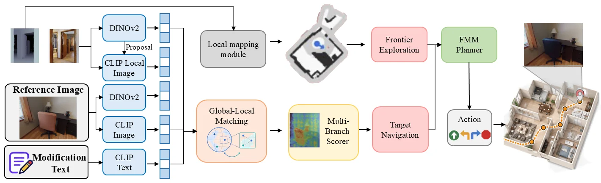
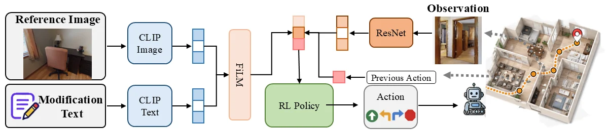
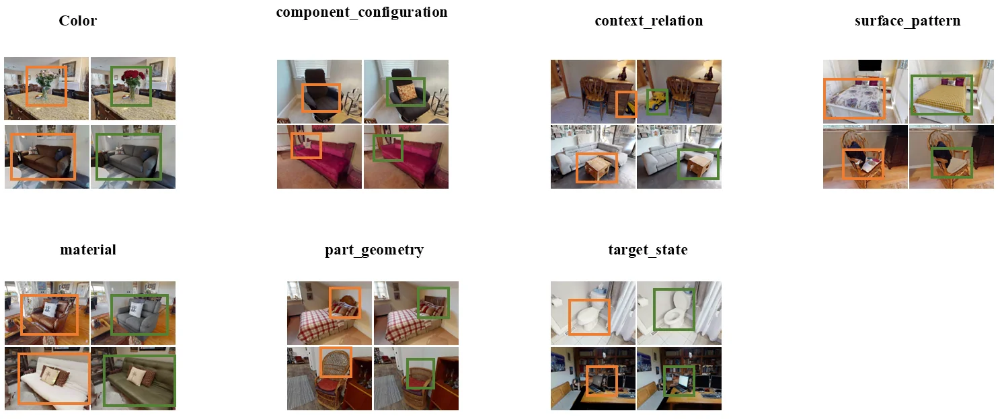
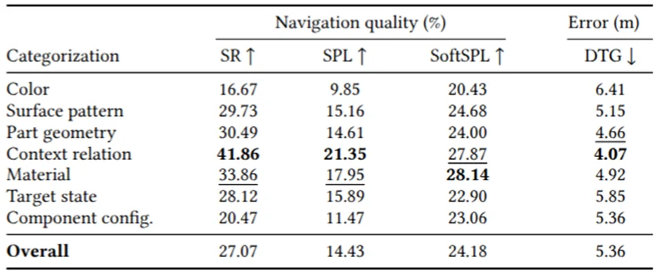

在研方向Ongoing research
组合线索目标导航（ReCoNav / CINav）Compositional clue navigation (ReCoNav / CINav)
面向参考图像与修改语言共同指定目标的组合导航，构建七类变化任务，以视觉匹配和语言条件策略建立免训练与学习式基线；学习式基线总体成功率27.07%。For navigation to a target specified jointly by a reference image and modification text, seven edit types are evaluated using visual-matching and language-conditioned baselines; the learning baseline reaches 27.07% overall success.
- 输入Input
- 参考图像与语言修改指令Reference image and language modification
- 评估Evaluation
- 七类目标变化；学习式导航基线Seven target edit types; learned navigation baseline
项目背景Background
用户提供的参考照片可能与当前物体存在差异，例如背包已经打开、侧边水杯被取走。机器人接收参考图像和一条相对修改指令，在未知室内环境中探索，找到满足组合描述的正确实例，并导航到附近主动停止。A reference photograph may differ from the current object: a backpack may now be open with its side bottle removed. The robot receives a reference image and a relative modification instruction, explores an unknown indoor environment, finds the intended instance, and stops nearby.
任务要求把参考外观与修改信息共同转换成目标。变化覆盖颜色、材质、纹理、局部几何、目标状态、组件配置与上下文关系，单独的类别词或旧照片无法充分确定目标实例。The reference appearance and modification must jointly define the goal. Edits cover color, material, surface pattern, part geometry, target state, component configuration, and contextual relations; a category name or outdated image alone is insufficient.
任务说明Task
- 定义参考图像加修正语言的组合实例导航，区分“寻找同类物体”与“找到符合当前意图的具体实例”。Composed instance navigation uses a reference image plus modification text to identify the specific instance matching the current intent.
- 围绕七种可见变化构建参考图像、目标图像和双向修改语言，强调局部编辑和其他属性保持。Reference–target image pairs and bidirectional edit instructions cover seven visible change types, with local editing and preservation of unrelated attributes.
- 设计免训练与学习式两类基线，分别连接视觉匹配、空间探索和策略学习。Two baseline families connect visual matching and spatial exploration through either a training-free system or a learned policy.

系统和关键技术System and key technologies
数据构造流程先在三维场景中选择目标及可通行轨迹，由分析 VLM 判断可修改的属性并产生双向指令，再由生成模块按局部性和几何保持约束构造参考图像。The data pipeline selects a target and traversable routes in a 3D scene. An analysis VLM identifies editable attributes and creates bidirectional instructions; a generation module produces the reference image under locality and geometry-preservation constraints.
免训练基线使用 CLIP 图像/文本特征与 DINOv2 局部特征进行多分支匹配，并结合局部建图、前沿探索和 FMM 规划推进导航。学习式基线将参考图像和文本特征通过 FiLM 调制，与 ResNet 观测及历史动作输入强化学习策略。The training-free baseline combines CLIP image/text features and DINOv2 local features for multi-branch matching, together with local mapping, frontier exploration, and FMM planning. The learning baseline uses FiLM to condition reference-image and text features, combining them with ResNet observations and the previous action in an RL policy.



实验Experiments
学习式基线按七种修改类型评估目标到达率（SR）、路径效率（SPL/SoftSPL）及目标距离误差（DTG）。总体 SR 为 27.07%，SPL 为 14.43%，SoftSPL 为 24.18%，DTG 为 5.36 m。The learning baseline is evaluated over seven edit categories using success rate (SR), path efficiency (SPL/SoftSPL), and distance to goal (DTG). Overall SR is 27.07%, SPL 14.43%, SoftSPL 24.18%, and DTG 5.36 m.
不同变化类型呈现明显差异：上下文关系类 SR 为 41.86%，颜色类为 16.67%。分类结果刻画了机器人理解组合目标并区分相似实例时的难度差异。Performance varies across edits: SR is 41.86% for contextual relations and 16.67% for color. The breakdown characterizes differences in the difficulty of understanding composed goals and distinguishing similar instances.
| 修改类型Edit type | SR ↑ (%)SR ↑ (%) | SPL ↑ (%)SPL ↑ (%) | SoftSPL ↑ (%)SoftSPL ↑ (%) | DTG ↓ (m)DTG ↓ (m) |
|---|---|---|---|---|
| 颜色Color | 16.6716.67 | 9.859.85 | 20.4320.43 | 6.416.41 |
| 表面纹理Surface pattern | 29.7329.73 | 15.1615.16 | 24.6824.68 | 5.155.15 |
| 局部几何Part geometry | 30.4930.49 | 14.6114.61 | 24.0024.00 | 4.664.66 |
| 上下文关系Context relation | 41.8641.86 | 21.3521.35 | 27.8727.87 | 4.074.07 |
| 材质Material | 33.8633.86 | 17.9517.95 | 28.1428.14 | 4.924.92 |
| 目标状态Target state | 28.1228.12 | 15.8915.89 | 22.9022.90 | 5.855.85 |
| 组件配置Component configuration | 20.4720.47 | 11.4711.47 | 23.0623.06 | 5.365.36 |
| 总体Overall | 27.0727.07 | 14.4314.43 | 24.1824.18 | 5.365.36 |

